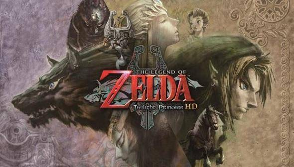
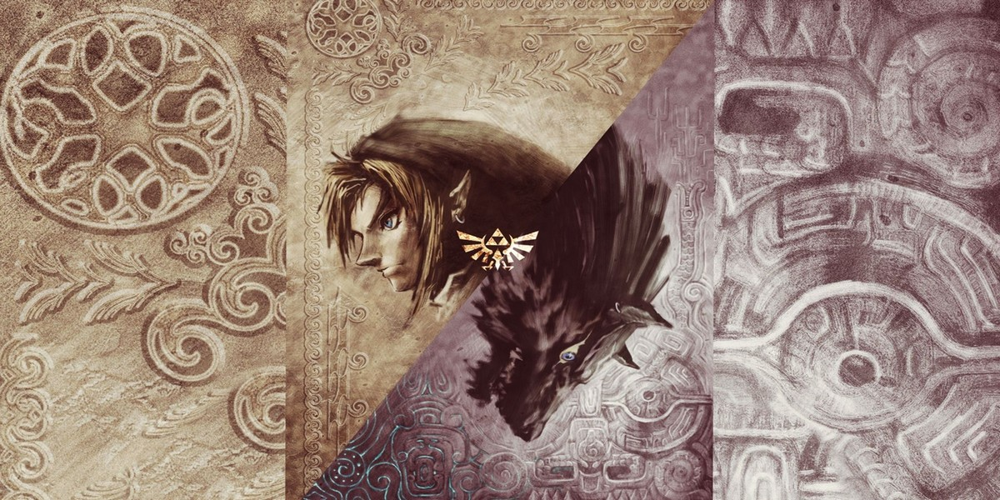
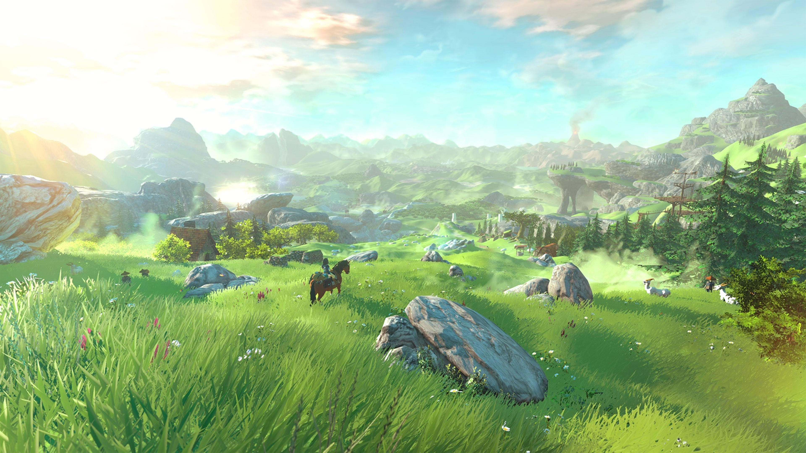
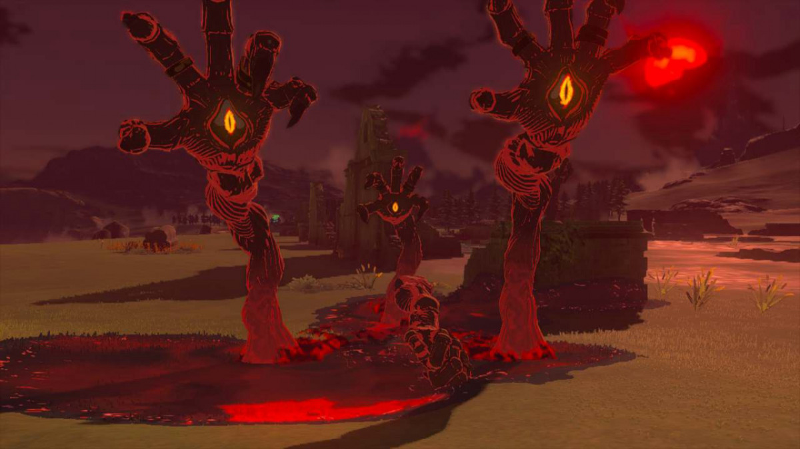

Privacy Policy | Terms of Use | Cookie Preferences
© Nintendo. The Legend of Zelda and Nintendo Switch are trademarks of Nintendo
Versione hd
Versione wii u
Versione manga
"The Legend of Zelda: Twilight Princess" è un videogioco sviluppato da Nintendo per varie piattaforme, tra cui Nintendo Wii e Nintendo GameCube.Nel corso del gioco, Link esplora diverse regioni di Hyrule, risolve enigmi, affronta dungeon e sconfigge boss per ottenere i frammenti del Mondo di Luce e ripristinare la speranza in Hyrule. Durante il suo viaggio, Link incontra una serie di personaggi, tra cui la Principessa Zelda, gli abitanti di Hyrule e altre creature misteriose. L'avventura di Link si svolge in entrambi i mondi, quello del Crepuscolo e quello della Luce, e utilizza una varietà di strumenti e abilità speciali per progredire nella storia. Attraverso il suo coraggio e la sua determinazione, Link affronta le sfide che gli si presentano e cerca di riportare la pace nel regno.
Midna (ミドナ Midona?) è un personaggio immaginario della serie di videogiochi The Legend of Zelda. Debutta in The Legend of Zelda: Twilight Princess e come Navi o Tael aiuta il giocatore con preziosi consigli. Il suo obiettivo è distruggere Zant, usurpatore del trono nel regno del crepuscolo. Ha una natura maliziosa e oscura, ed ha una risatina malvagia che usa frequentemente. Il nome Midna deriva da midnight (mezzanotte). Appare come assistente in Super Smash Bros. per Nintendo 3DS e Wii U e in Super Smash Bros. Ultimate; come personaggio giocabile in Hyrule Warriors. Midna appartiene alla razza dei Twili proprio come Zant. In tempi recenti è stata trasformata in un demonietto dall'oscuro signore Zant. In seguito, Midna rivela essere la Principessa del Regno del Crepuscolo, tramutata dal potente Zant in una creatura dell'oscurità. Esso usa il potere oscuro del suo signore Ganondorf per mantenerla in questa forma. Link incontra Midna per la prima volta nel regno del crepuscolo, in una prigione del castello di Hyrule, trasformato in lupo. Da qui in poi, essa rimarrà in groppa al lupo per tutto il tempo. Dopo aver superato il tempio degli Zora, Link e Midna trovano Zant proprio di fronte a loro. Esso infligge un grave danno a Midna, esponendola direttamente al mondo della luce. Link, dunque, porta Midna dalla principessa Zelda, la quale dice all'eroe di trovare la Spada Suprema. Dopodiché, Zelda salva la piccola creatura donandole tutto il suo potere e diventando un tutt'uno con lei, salvandola da una quasi certa morte. Dopo questa esperienza, Midna assume un comportamento più serio e, sempre cavalcando Link, parte alla ricerca della Spada Suprema e, in seguito, dei frammenti di specchio che potranno riportarla al suo regno d'origine. Dopo la battaglia contro Zant, Midna recupera quasi tutti i suoi poteri, con i quali dà il colpo di grazia al malvagio signore. Dopo la morte di Ganondorf, Midna riassume il suo originale aspetto. Alla fine del gioco, Midna saluta Link e Zelda mentre torna al Regno del Crepuscolo e, sorprendendo i due, rompe lo specchio che permette di raggiungere quel mondo (con una sola lacrima).
Privacy Policy | Terms of Use | Cookie Preferences
© Nintendo. The Legend of Zelda and Nintendo Switch are trademarks of Nintendo